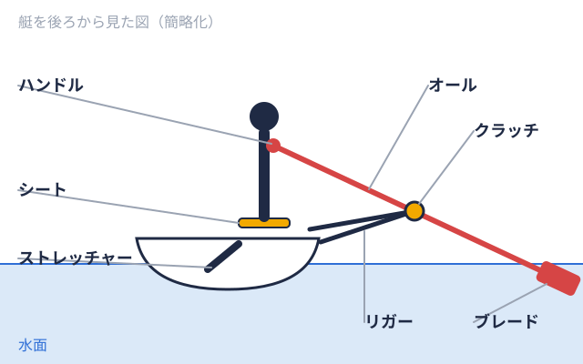

練習 2026-10-19
ローイングのエルゴの使い方｜ボート部の初心者向けフォームと設定
ローイングのエルゴは「フォームを覚える道具」から始めます
大学ボート部に入ると、水上に出る前の時期や悪天候の日に、エルゴメーター陸の上で漕ぐ動作を再現するトレーニング機器。タイムの計測にも使う。（ローイングマシン）に向かう時間が多くなります。エルゴは水上の艇をそのまま再現するものではなく、漕ぐ動作を陸上で反復し、体力を測るための機器です。最初の目標は「速く漕ぐこと」よりも、「脚・体幹・腕を決まった順番で使う動きを身につけること」に置くほうが、後の伸びにつながりやすいと考えられます。
この記事は、大学ボート部（ローイング）に入ったばかりの方や入部を検討している方に向けて、エルゴの基本を整理したものです。公営競技のボートレースとは別の競技の話です。数値や操作は主にメーカーのConcept2の公開情報を参照しています。部ごとに機種や指導方針が異なるため、実際の設定は、コーチや先輩の指示を優先してください。
1ストロークの流れ｜キャッチ・ドライブ・フィニッシュ・リカバリー
エルゴの1回の動作は、力を出す「ドライブ水に入れたオールを脚などの力で引き、艇を前に進める局面。 」と、次の準備をする「リカバリーオールを水から出したあと、次の1本に向けて体とシートを前へ戻す局面。」で構成されます。Concept2の技術解説では、ドライブは仕事をする局面、リカバリーは休みながら次の準備をする局面と整理されています（出典: Concept2「Rowing Technique」）。
」と、次の準備をする「リカバリーオールを水から出したあと、次の1本に向けて体とシートを前へ戻す局面。」で構成されます。Concept2の技術解説では、ドライブは仕事をする局面、リカバリーは休みながら次の準備をする局面と整理されています（出典: Concept2「Rowing Technique」）。
キャッチ（漕ぎ始めの姿勢）
膝を曲げてシート漕ぐ人が座る席。下に車輪があり、脚の動きに合わせて前後に動く。 
初心者がやりがちなのは、背中を丸めて遠くまで届かせようとすることです。背中ではなく股関節から倒す意識を持つと、姿勢が安定しやすくなります。
ドライブ（漕ぐ局面）
Concept2は、ドライブを「まず脚で押し、次に上体を垂直の位置を越えて振り、最後に腕を引き付ける」順番で行うよう示しています。ハンドルは直線的に動かし、肩は低くリラックスさせます。合言葉は「脚・体・腕」です。腕から引くと脚の力を使いにくく、肩や腰への負担が大きくなる場合があります。
フィニッシュとリカバリー
フィニッシュ漕ぎの終わりの局面。水を押し終えてオールが水面から出る直後。ゴールの意味でも使う。では脚が伸び、上体はわずかに後ろへ傾き、ハンドルは肋骨の下あたりに軽く保たれます。大きく反らせる必要はありません。
リカバリーはドライブの逆順で、腕を伸ばし、股関節から上体を倒し、ハンドルが膝を越えてから膝を曲げてシートを前に出します。Concept2のブログでは、リカバリーはドライブより遅く、目安としてドライブ1に対しておよそ2の時間比にするという考え方が紹介されています。膝を早く曲げてしまうことや、リカバリーを急ぐことは、よくあるミスとされています（出典: Concept2「Understanding rowing technique: the recovery sequence」）。
ダンパーの設定｜「重さ」ではなく「フライホイールに入る空気」
エルゴの側面にあるダンパーのレバーは、初心者が最初に迷う箇所です。Concept2の解説では、ダンパーはフライホイールに入る空気の量を調整するもので、「ダンパーの設定は抵抗ではない」と明記されています。ストローク艇の最後尾寄りに座り、全員の漕ぐリズムを決める漕手。漕ぐ1回分の動作も指す。 の感触は変わりますが、実際の抵抗はフライホイールの回転によって生まれる、という説明です（出典: Concept2「The Damper and Drag of Olympians」）。数字を上げることが上級者向けというわけではありません。
の感触は変わりますが、実際の抵抗はフライホイールの回転によって生まれる、という説明です（出典: Concept2「The Damper and Drag of Olympians」）。数字を上げることが上級者向けというわけではありません。
ドラッグファクターで揃えるのが基本です
同じダンパーの数字でも、機械の汚れや設置環境で感触は変わります。そのためConcept2は、目盛りではなく「ドラッグファクター」で設定を揃える考え方を紹介しています。ドラッグファクターは、モニターがストロークの合間の減速から計算する値です。PM5では、メインメニューの「More Options」から「Display Drag Factor」を選び、漕ぎ始めて数秒待つと表示されます（出典: Concept2「How To Use Your PM5」）。メニュー表記はモニターの種類で異なる場合があります。
同じブログでは、五輪選手などの例とともに、全体の目安として120〜135前後が示されています。体格や筋力で適した値は変わるため、あくまで一例です。また、ダンパー10は一般的なトレーニングには向かないという趣旨の選手の発言も紹介されています。初心者は負荷を重くしすぎず、フォームを保てる設定から始めるのが無難です。部によって基準が決まっている場合もあるため、まず先輩やコーチに確認してください。
ストロークレートとペース表示の読み方
初心者が最初に押さえたいのは、次の2つです（出典: Concept2「How To Use Your PM5」前掲）。
- ストロークレート: 1分あたりのストローク数（SPM）。モニター右上に常に表示されます
- ペース: 500mを漕ぐのにかかる時間。数字が小さいほど速い状態です
レート1分間に漕ぐ回数。数字が大きいほど速いペースで漕いでいる。を上げれば必ず速くなるわけではありません。Rowing Australiaの解説では、レートが高くても艇（エルゴ）をしっかり進められていなければ効率が悪いと説明されています（出典: Rowing Australia「What your erg screen is actually telling you」）。初心者のうちは、指定されたレートの範囲で同じフォームを保つことを優先すると考えやすくなります。具体的なレートは、練習メニューごとにコーチから指示されるのが一般的です。
ペースを4倍すると、2000mの換算時間になります。算術上の換算であり、実際には後半の疲労でペースが変わる場合があります。
| 500mあたりのペース | 2000mに換算した時間 |
|---|---|
| 1:50.0 | 7:20.0 |
| 2:00.0 | 8:00.0 |
| 2:10.0 | 8:40.0 |
| 2:20.0 | 9:20.0 |
エルゴの数字と水上のレースタイムは別の指標です。インカレ決勝A優勝を決める最上位の決勝。優勝するにはこのレースに進む必要がある。 の優勝タイム平均は、男子エイト漕ぐ人8人と舵を取る人1人が乗る最大級の艇。1人1本のオールを持つ。で約5分57秒、女子シングルスカル1人乗りの艇。1人が左右2本のオールを持つ。種目コードは「1x」。
の優勝タイム平均は、男子エイト漕ぐ人8人と舵を取る人1人が乗る最大級の艇。1人1本のオールを持つ。で約5分57秒、女子シングルスカル1人乗りの艇。1人が左右2本のオールを持つ。種目コードは「1x」。 で約8分16秒でした（大学ボートの2000mタイム目安で集計しています）。これらを割り算してエルゴの目標にするのは適切ではありません。エルゴの目標は、学年や体格を踏まえて各部が決めていることが多いので、部の基準を確認してください。
で約8分16秒でした（大学ボートの2000mタイム目安で集計しています）。これらを割り算してエルゴの目標にするのは適切ではありません。エルゴの目標は、学年や体格を踏まえて各部が決めていることが多いので、部の基準を確認してください。
2000mテストの前に知っておきたいこと
多くの大学ボート部では、2000mを漕ぐエルゴテストを体力測定の参考にしています。この距離はローイングの競技距離に由来します。World Rowingの解説によると、2000mは1893年に単スカル1人が左右に1本ずつ、合計2本のオールを持って漕ぐ方式。またその方式の艇。 で初めて使われ、1894年の欧州選手権で全面的に採用され、大学の競技や屋内のエルゴ競技にも広がりました（出典: World Rowing「Why race 2000m」）。
で初めて使われ、1894年の欧州選手権で全面的に採用され、大学の競技や屋内のエルゴ競技にも広がりました（出典: World Rowing「Why race 2000m」）。
PM5では、メインメニューから「Select Workout」「New Workout」「Single Distance」と進み、距離を2000mに設定する流れが案内されています。初めてのテストで気をつけたい点は次のとおりです。
- 記録よりも、最後まで同じフォームで漕ぎ切ることを優先する
- 序盤で飛ばしすぎず、一定のペースを目指す
- ダンパー（ドラッグファクター）は部の基準に合わせる
- 前日の睡眠と食事を確保する（大学ボート部の食事メニューも参考になります）
初心者に多いミスと見直しの視点
| よくあるミス | 起こりやすい影響 | 見直しの視点 |
|---|---|---|
| ドライブで腕から引く | 肩や腰に負担がかかる場合がある | 「脚・体・腕」の順番を意識する |
| 背中を丸めてキャッチオールの先を水に入れ、水をつかむ瞬間。1回の漕ぎの始まりにあたる。に入る | 腰への負担が大きくなる場合がある | 股関節から前傾する |
| リカバリーを急ぐ | 次のキャッチの姿勢が崩れやすい | ドライブより遅く戻す |
| ダンパーを上げすぎる | フォームが崩れ、疲労が早く出る場合がある | ドラッグファクターを確認する |
| レートだけ上げる | 力が伝わらず効率が下がる場合がある | ペースとセットで確認する |
横から動画を撮って見直すと、自分では気づきにくい癖が見えてきます。
腰痛を避けるための注意点
ローイングと腰痛の関係を整理したシステマティックレビュー（Nugentら、2021年、British Journal of Sports Medicine）では、疲労が進むとキャッチ局面で腰が丸まる動きが大きくなり、その傾向はエルゴのほうが強いと報告されています。意識したい点は次のとおりです。
- 疲れてきたときほど、キャッチで背中が丸まっていないか確認する
- 練習量を急に増やさない
- 長時間のエルゴは部の指示に従い、無理に延長しない
- 痛みやしびれがあるときは早めに申告し、必要に応じて医療機関に相談する
腰痛の詳しい予防はボート部の腰痛を予防する方法、脇腹や背中の痛みが続く場合は肋骨疲労骨折の予防で整理しています。いずれも一般的な情報であり、診断や治療の代わりにはなりません。
次に見ておくと役立つページ
エルゴの練習を続けると、自分の部が他大学と比べてどのあたりなのか気になってくる時期があります。ローイングマニアでは、インカレの結果を年度別・種目別にまとめています。年度別結果一覧、直近の2025年度の結果、種目別では男子シングルスカルの歴代優勝校、各大学の戦績は大学一覧から確認できます。
道具の費用は大学ボート部の用具にかかる費用、入部前の方は体験入部ガイドと練習量はきつい？もあわせてどうぞ。
まとめ
- 1ストロークは4局面で、ドライブは「脚・体・腕」、リカバリーはその逆順です
- ダンパーは抵抗の強さではなく空気量の調整です。ドラッグファクターの基準を部に確認しましょう
- ストロークレートとペースはセットで見ます。エルゴと水上のタイムは別の指標です
- 疲れたときほどキャッチで背中が丸まりやすくなります。違和感は早めに申告しましょう
出典
- Concept2「Rowing Technique」 https://concept2.com.au/training/rowing-technique
- Concept2「Understanding rowing technique: the recovery sequence」 https://www.concept2.co.nz/Blog/x_post/Understanding-rowing-technique-the-recovery-sequence-00059.html
- Concept2「The Damper and Drag of Olympians」 https://www.concept2.com/blog/the-damper-and-drag-of-olympians
- Concept2「How To Use Your PM5」 https://www.concept2.com/service/monitors/pm5/how-to-use
- Rowing Australia「What your erg screen is actually telling you」 https://indoor.rowingaustralia.com.au/insights/what-your-erg-screen-is-actually-telling-you
- World Rowing「Why race 2000m」 https://worldrowing.com/news/why-race-2000m-the-history-behind-the-distance
- Nugent FJ ほか、British Journal of Sports Medicine 2021 https://pure.ul.ie/en/publications/the-relationship-between-rowing-related-low-back-pain-and-rowing-/
- 公益社団法人日本ローイング協会（JARA） https://www.jara.or.jp/
本記事は一般的な情報の整理であり、エルゴの設定や練習内容は所属する部の指導者の指示を優先してください。選手個人の氏名は掲載していません。
この部活・競技を応援したい方へ
取材してほしい部活を募集中
オフシーズン・引退後に、長期インターンという選択
部活で培った力を実務で試す。16タイプ診断（30秒）で合う企業がわかります。